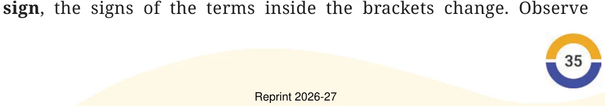

Let us find the value of this expression,
\(200 - (40 + 3)\).
We first evaluate the expression inside the bracket to 43 and then subtract it from 200. But it is simpler to first subtract 40 from 200:
\(200 - 40 = 160\).
And then subtract 3 from 160:
\(160 - 3 = 157\).
What we did here was \(200 - 40 - 3\). Notice, that we did not do
\(200 - 40 + 3\).
So,
\(200 - (40 + 3) = 200 - 40 - 3\).
Example 12: We also saw this earlier in the case of Irfan purchasing a biscuit packet (₹15) and a toor dal packet (₹56). When he paid ₹100, the change he gets in rupees is:
\(100 - (15 + 56) = 29\).
The change could also have been calculated as follows:
- First subtract the cost of the biscuit packet (15) from 100:
\(100 - 15 = 85\).
This is the amount the shopkeeper owes Irfan if he had purchased only the biscuits. As he has purchased toor dal also, its cost is taken from this remaining amount of 85.
- So, to find the change, we need to subtract the cost of toor dal from 85.
\(85 - 56 = 29\).
What we have done here is \(100 - 15 - 56\). So,
\(100 - (15 + 56) = 100 - 15 - 56\).
Notice how upon removing the brackets preceded by a negative sign, the signs of the terms inside the brackets change. Observe the signs of 40 and 3 in the first example, and that of 15 and 56 in the second.

Example 13: Consider the expression \(500 - (250 - 100)\). Is it possible to write this expression without the brackets?
To evaluate this expression, we need to subtract \(250 - 100 = 150\) from 500:
\(500 - (250 - 100) = 500 - 150 = 350\).
If we were to directly subtract 250 from 500, then we would have subtracted 100 more than what we needed to. So, we should add back that 100 to \(500 - 250\) to make the expression take the same value as \(500 - (250 - 100)\). This sequence of operations is \(500 - 250 + 100\). Thus,
\(500 - (250 - 100) = 500 - 250 + 100\).
Check that \(500 - (250 - 100)\) is not equal to \(500 - 250 - 100\).
Notice again that when the brackets preceded by a negative sign are removed, the signs of the terms inside the brackets change. In this case, the signs of 250 and \(-100\) change to \(-250\) and 100.
Example 14: Hira has a rare coin collection. She has 28 coins in one bag and 35 coins in another. She gifts her friend 10 coins from the second bag. Write an expression for the number of coins left with Hira.
This can be expressed by \(28 + (35 - 10)\). We know that this is the same as \(28 + (35 + (-10))\). Since the terms can be added in any order, this expression can simply be written as
\(28 + 35 + (-10)\), or \(28 + 35 - 10\).
Thus, \(28 + (35 - 10) = 28 + 35 - 10 = 53\).
When the brackets are NOT preceded by a negative sign, the terms within them do not change their signs upon removing the brackets. Notice the sign of the terms 35 and \(-10\) in the above expression.